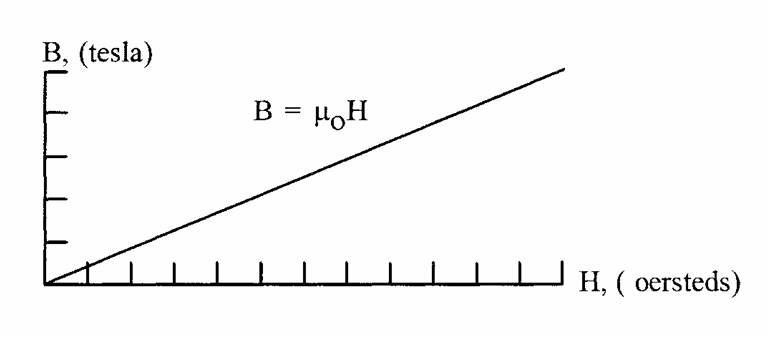

inductor#
Author : Soroush Saberifar
Layout :#
1- Introduction#
2- Applications#
3- Magnetic Properties in Free Space#
4- Right-Hand Rule#
5- Intensifying the Magnetic Field#
6- Magnetic Circuit and Flux Behavior#
7- Simple Transformer#
8- Conclusion#
9- References#
1- Introduction#
An inductor is a passive electrical component that stores energy in a magnetic field and resists sudden changes in current.
It consists of a conductive wire coil, often wound around a core of air or magnetic material.
This behavior makes inductors essential in stabilizing circuits, filtering noise, and enabling energy transfer in applications like power supplies, radio frequency systems, and transformers.
Inductors operate based on electromagnetic principles, where current flowing through the coil generates a magnetic field that opposes changes in current. This property is fundamental in smoothing out voltage fluctuations and protecting sensitive components in circuits.
The core material impacts performance, with air cores suited for high frequencies and ferrite or iron cores for higher inductance at lower frequencies. By combining simplicity with versatility, inductors serve as indispensable elements in modern electrical and electronic systems.
Figure 1
2- Applications#
Energy Storage Inductors store energy in their magnetic fields when current flows through them. This energy can be released as needed, making inductors essential in power electronics, such as DC-DC converters and uninterruptible power supplies (UPS). For example, in a buck converter, an inductor temporarily stores energy during the “on” phase of a switching cycle and releases it during the “off” phase to provide a steady output voltage. This ability to regulate energy flow is crucial in maintaining efficient and stable power delivery in electronic devices.
Filtering and Noise Suppression Inductors are widely used in low-pass filters, where they block high-frequency signals while allowing low-frequency components to pass. This application is critical in power supplies to remove high-frequency noise from AC mains or switching circuits, ensuring clean and stable power for sensitive electronic components. For instance, in audio equipment, inductors prevent unwanted noise from interfering with sound quality, while in communication systems, they eliminate high-frequency interference.
Figure 2
Tuning and Resonance Circuits In combination with capacitors, inductors are used to form LC circuits, which resonate at specific frequencies. This property is exploited in radio receivers and transmitters for frequency tuning, allowing devices to select or transmit signals at desired frequencies. For example, in a radio receiver, an LC circuit is used to isolate a particular station’s frequency from a broad spectrum of signals. This precise tuning capability makes inductors indispensable in communication and broadcasting technologies.
Figure 3
3- Magnetic Properties in Free Space#
When a direct current (DC) flows through a long straight wire, it generates a magnetic field around the conductor. This magnetic field is circular and forms concentric loops around the wire, with its intensity decreasing as the distance from the wire increases. The behavior of this field is defined by two primary properties:
Magnetizing Force (ùêª)
The magnetizing force represents the strength of the magnetic field created by the current. It is directly proportional to the current (I) and inversely proportional to the distance (ùëü) from the wire. The mathematical relation is:
Here,ùêª is measured in oersteds in the CGS system or in amperes per meter in the SI system.
Magnetic Flux Density (B)
The magnetic flux density quantifies the strength and concentration of the magnetic field. It is related to the magnetizing force (ùêª) through the permeability of free space (ùúá0 ), which represents the ability of the vacuum to support a magnetic field:
In the CGS system,B is measured in gauss, while in the SI system, it is measured in tesla.
Direction of the Magnetic Field#
The right-hand rule helps determine the direction of the magnetic field. If the thumb of the right hand points in the direction of the current, the curled fingers represent the direction of the magnetic field lines around the wire. Reversing the current reverses the polarity of the magnetic field.
Key Observations#
The magnetic field‚Äôs strength (ùêª) decreases as the distance from the wire increases. This is evident from the inverse proportionality to ùëü in the formula for ùêª.The magnetic field is proportional to the current flowing through the conductor. A higher current produces a stronger magnetic field. The field is continuous and forms closed loops around the wire.
Practical Implications#
This phenomenon forms the foundation of electromagnetism and is the basis for the design and operation of many devices:
Transformers:
Magnetic fields generated by current in a primary coil induce current in a secondary coil, enabling energy transfer between circuits.
Figure 4. Transformer
Electromagnets:
Wrapping a wire around a ferromagnetic core enhances the magnetic field, creating powerful electromagnets used in motors, generators, and lifting devices.
import schemdraw
from schemdraw import elements as elm
with schemdraw.Drawing() as d:
V = elm.Battery().up().label(['+',r'$V_{in}$','-']).length(4)
elm.Line().right()
elm.Inductor().down(4).label("L")
elm.Line().left()
4- Right-Hand Rule#
The right-hand rule is a simple method to determine the direction of magnetic field lines around a current-carrying conductor.
How it works:
Grasp the conductor with your right hand such that your thumb points in the direction of the current (conventional current flow, from positive to negative). Your fingers will curl in the direction of the magnetic field lines around the conductor.
Key points:
The magnetic field forms concentric circles around the wire. Reversing the direction of the current reverses the direction of the magnetic field. This rule highlights the relationship between electric current and magnetic fields, forming the basis for understanding electromagnetic interactions.
5- Intensifying the Magnetic Field#
When current flows through a conductor, it creates a magnetic field around it.
If multiple conductors carrying current in the same direction are placed close together, their magnetic fields combine, resulting in an intensified total field. This principle is the foundation for the design of coils and solenoids, where a single conductor is wound into multiple turns to enhance the magnetic field strength.
Magnetic Field in a Coil#
When a wire is wound into a coil, the magnetic fields produced by individual turns of the wire combine and intensify within the coil. The magnetic field generated resembles that of a bar magnet, with distinct north and south poles.
The strength of the magnetic field (ùêµ) in a coil is given by:
Where:
B: Magnetic flux density (tesla or gauss).
μ: Permeability of the core material.
N: Number of turns in the coil.
I: Current through the coil (amps).
l: Length of the coil (meters).
6- Magnetic Circuit and Flux Behavior#
Magnetic Circuit:
The magnetic circuit refers to the space through which magnetic flux (Œ¶) travels around the coil. The magnitude of the flux is determined by the product of the current (I) and the number of turns in the coil (ùëÅ).The force required to create this flux is called magnetomotive force (MMF) and is expressed as:
Magnetic Flux Density and Magnetizing Force: The relationship between magnetic flux density (B) and magnetizing force (H) for an air-core coil is linear, as shown in Figure 5.The ratio of B to ùêª is known as permeability (ùúá):

Figure 5
For an air-core coil in the CGS system, this ratio is unity, with units of gauss per oersted (gauss/oersted).
AC Current Behavior: If the direct current (DC) source in Figure 5 is replaced with an alternating current (AC) source (Figure 6), the relationship between ùêµ and ùêª changes, as depicted in Figure 6. This highlights how ùêµ and ùêª vary dynamically with an AC source.
Figure 6
Advantages of Air-Core Coils:
A significant advantage of air-core coils is the linear relationship between ùêµ and H.
This linearity ensures that increasing ùêª proportionally increases ùêµ, and thus the flux in the coil.
Large magnetic fields can be generated by applying high currents, making air-core coils suitable for applications requiring strong, controlled magnetic fields.
7- Simple Transformer#
A transformer, in its simplest form, consists of two air-core coils that share a common magnetic flux, as shown in Figure 1-9. One coil, known as the primary coil, is connected to a power source and carries the current that generates the magnetic field. The other coil, referred to as the secondary coil, is open-circuited and does not initially carry current.
Flux Behavior in a Simple Transformer#
Shared Magnetic Flux:
The magnetic field generated by the primary coil creates a flux that diverges from its ends in all directions. This flux is responsible for transferring energy from the primary coil to the secondary coil.Leakage Flux:
Not all of the magnetic flux generated by the primary coil links both coils. The flux that does not pass through the secondary coil is called leakage flux.
Linked Flux: The portion of the flux that links both the primary and secondary coils is crucial for energy transfer.
Leakage Flux: This represents energy lost in the magnetic circuit as it does not contribute to energy transfer between the coils.
Significance of Leakage Flux#
Leakage flux reduces the efficiency of the transformer as it represents a loss in the system. In practical transformers, steps are taken to minimize leakage flux by using ferromagnetic cores, which confine and direct the magnetic field more effectively between the two coils.
8- Conclusion#
Inductors and their associated magnetic principles play a fundamental role in the design and operation of modern electrical and electronic systems. From the basic generation of magnetic fields around a conductor to the advanced concepts of coils, solenoids, and transformers, the interplay between electric current and magnetic flux is the cornerstone of electromagnetism.
Key takeaways from the discussed concepts include:
1. Magnetic Field Formation:#
Current flowing through a conductor generates a magnetic field, which can be intensified by shaping the conductor into coils or placing conductors close to each other.
2. Right-Hand Rule and Polarity:#
The direction of the magnetic field depends on the direction of current, as explained by the right-hand rule. Reversing the current reverses the field polarity.
3. Air-Core Coils:#
These coils demonstrate linear behavior between magnetizing force (ùêª) and flux density (B), offering advantages in controllability and high-field generation, though they have practical current limits.
4. Leakage Flux in Transformers:#
While transformers efficiently transfer energy between coils through shared magnetic flux, minimizing leakage flux is crucial for maintaining efficiency.
These principles underline the versatility of magnetic circuits and components like inductors and transformers in energy transfer, signal filtering, and frequency tuning. Mastery of these fundamental concepts not only enhances the understanding of electromagnetic systems but also supports innovation in power electronics, communication devices, and many other fields.